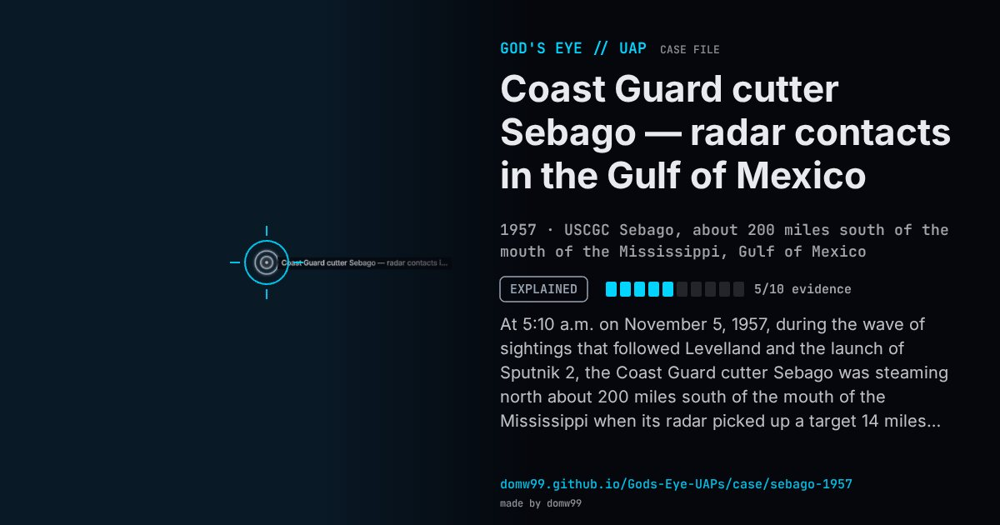

Coast Guard cutter Sebago — radar contacts in the Gulf of Mexico

At 5:10 a.m. on November 5, 1957, during the wave of sightings that followed Levelland and the launch of Sputnik 2, the Coast Guard cutter Sebago was steaming north about 200 miles south of the mouth of the Mississippi when its radar picked up a target 14 miles off, moving north to south. Over the next 27 minutes the log records a string of contacts: one closing to two miles and passing up the port side, then lost, others at 22 and 55 miles, one stationary at seven miles, and the last at 175 miles. At 5:21 four men on deck saw a brilliant light, like a planet, cross part of the sky to the north-west for three seconds. The navigator’s estimates of the target’s speed, from 1,000 to 3,300 mph, made the papers, which described one object circling the ship. Blue Book and later the Condon study treated the light as a meteor and the radar targets as unrelated echoes.
Explanation
Blue Book evaluated the radar contacts as false targets from anomalous propagation and the visual sighting as a meteor. The Condon study’s radar analyst agreed that the visual object was a meteor and the echoes most likely anomalous propagation, with the first target possibly an aircraft. The news reports of a single craft circling the ship were built from separate, unrelated contacts.
What was seen
Shape: Radar targets; one brilliant light “like a planet” crossing for three seconds
Witnesses: The cutter’s radar operators and four men on deck
Duration: 27 minutes on radar; the light three seconds
Sources
- Project Blue Book file, Gulf of Mexico, 5 November 1957 (Internet Archive)
- Washington Post, November 7, 1957 (transcribed)
- SUNlite review of the Sebago case (German translation)
Browse
- United States
- 1950s
- Explained
- Radar-visual cases
- Official government documents
- Military witnesses
- Radar tracking
- Lights and fireballs